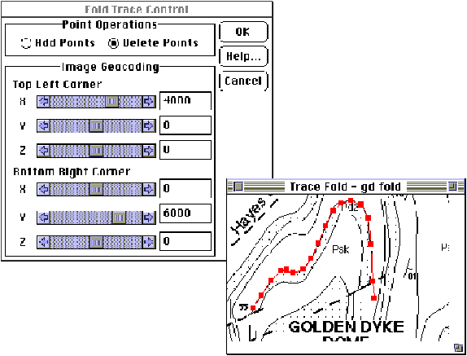
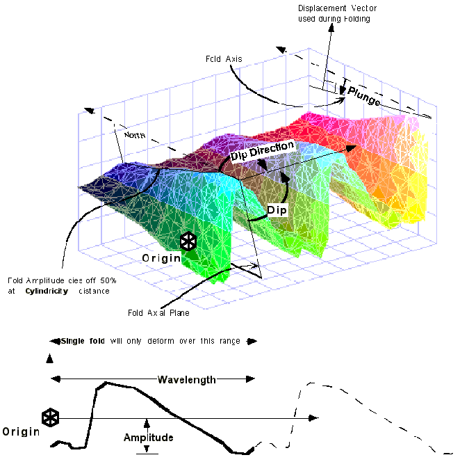

Fold
In order to define a folding event place a Fold icon  in the History window. You will then be provided with the Fold definition window.
in the History window. You will then be provided with the Fold definition window.

All folds simply distort the existing geology by variable translation parallel to the fold axial plane. This distortion therefore cannot create a plunging fold.. The 'single-event' kinematic design of Noddy means that if a plunging fold is required, a separate event is necessary to introduce the plunge - usually a Tilt.
Fold events simultaneously generate an axial plane cleavage and a fold axis lineation.
| GROUP | NAME | FUNCTION |
|---|---|---|
| Form | Fold Type | Select from Sinisoidal or User Defined fold profiles |
| Single Fold | Only allow one fold train to develop | |
| Show Profile | Show and edit current fold profile | |
| Trace From Image... | Trace fold profile over an image file (BMP, PNG, …) | |
| Position | X | Origin position in X direction of fold train |
| Y | Origin position in Y direction of fold train | |
| Z | Origin position in Z direction of fold train | |
| Orientation | Dip Dir | Dip Direction of Fold Axial Plane |
| Dip | Dip of Fold Axial Plane | |
| Pitch | Pitch of Fold Axis in Axial Plane | |
| Scale | Wave | Wavelength of One Anticline/Syncline pair, or if User Defined, of one wave train as drawn |
| Amp | Height of maximum fold displacement perpendicular to fold axis | |
| Cyl | Distance at which fold amplitude dies off 50% along fold axis (produces doubly plunging folds) |
Tracing Fold Profiles Directly From Maps
When the Trace From Image Button is selected, the program will ask for an image (BMP, PNG, …) from which fold profiles can be traced directly, and also calculates the fold wavelength, amplitude and position. The scaling of the profile is determined by the Fold Trace Control Window, which determines the coordinates of the NW and SE corners. Points on the fold profile may be defined by clicking in the Image window, and may be edited by dragging them. To remove a point, select Delete Points and click on the unwanted point.
At present the fold profile tool only works for upright fold profiles, where the X values of the profile increase from left to right, so that the map may need to be rotated before the tool can be used.


Noddy · open source under the MIT licence · Loop3D/noddy_qt